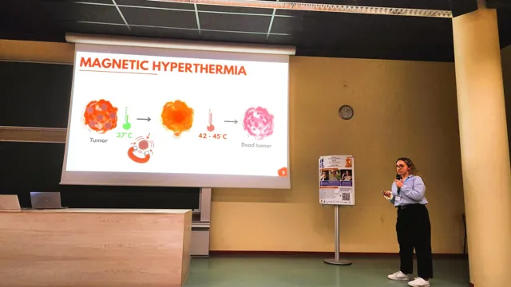
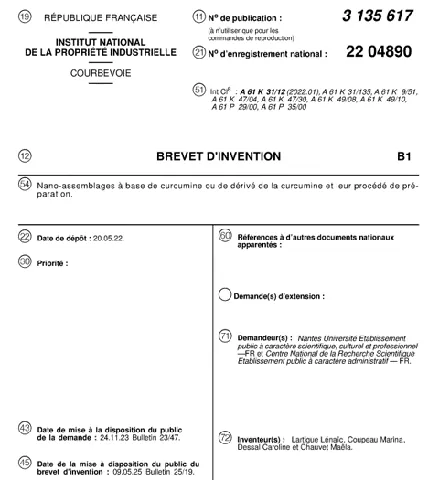

Financement
MAGNETIMA financé par l’ANR
MAGNETIMA est un projet de recherche en nanomédecine magnétique financé par l’ANR.
Lire la suite : MAGNETIMA financé par l’ANR →NanoBioMat / Actualités
Vie du groupe, nouvelles scientifiques et ressources à découvrir.
Financement
MAGNETIMA est un projet de recherche en nanomédecine magnétique financé par l’ANR.
Lire la suite : MAGNETIMA financé par l’ANR →
Conférence
Léa Ponroy a présenté ses travaux de thèse sur les nanoassemblages magnétiques et photoactifs à PHOTONANO26, à Paris.
Lire la suite : Léa Ponroy présente ses travaux à PHOTONANO26 →
Conférence
Marie-Léa Lalanne a présenté ses travaux de thèse sur l’hyperthermie magnétique et les nanoparticules magnétiques pour des applications biomédicales à l’Université d’Angers.
Lire la suite : Marie-Léa Lalanne à la journée Femmes et Sciences – SHE →
Propriété intellectuelle
Le brevet français FR 3 135 617 B1 a été délivré en mai 2025.
Lire la suite : Délivrance d’un brevet français sur des nanoassemblages à base de curcumine →Aucune actualité dans cette catégorie pour le moment.